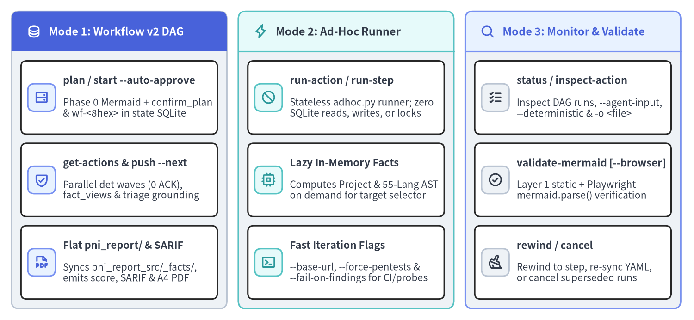

Workflows v2 Conditional DAG & Pre-Flight Readiness Gates
Executing a reliable software health audit, multi-component monorepo rollup, live penetration test, or phased modernization plan requires deterministic planning and validation before state is frozen into SQLite. pni501 (v0.2.0) unifies this lifecycle under pni workflows, combining a Workflow v2 Conditional DAG engine (needs: dependencies, when: guards, Phase 0 lightweight recon & validated Mermaid DAGs, confirm_plan approval gates, and parallel frontier execution), 4 workflow categories (audit, rollup, migration, progress), three complementary operating modes, and 112 built-in workflow templates across 55 supported languages + generic.

Source Code
from drawlib.canvas import save, setup
from drawlib.icons import phosphor
from drawlib.smartarts import CardList, Panel
from drawlib.styles import Styles
setup(width=182, height=84, dpi=150)
p1 = Panel(
"Mode 1: Workflow v2 DAG",
header_variant="filled",
header_height=10.5,
style=Styles.Neutral.patch(shape_r=2.0),
header_style=Styles.PrimaryFlat,
text_style=Styles.WhiteBold.patch(text_size=11.2),
icon=phosphor.database,
icon_style=Styles.WhiteBold,
)
p1.draw(xy=(3.0, 3.0), width=56.5, height=78.0)
ix1, iw1, ih1 = p1.get_content_box(xy=(3.0, 3.0), width=56.5, height=78.0, padding=(2.5, 2.5))
c1 = CardList(
style=Styles.WhiteBordered.patch(shape_r=1.5),
text_style=Styles.DarkBold.patch(text_size=10.5),
description_style=Styles.Dark.patch(text_size=10.0),
badge_shape="rounded_rect",
badge_style=Styles.PrimaryNeutral,
badge_text_style=Styles.PrimaryBold.patch(text_size=10.0),
icon_style=Styles.PrimaryBold,
direction="vertical",
spacing=2.4,
)
c1.add("plan / start --auto-approve", "Phase 0 Mermaid + confirm_plan\n& wf-<8hex> in state SQLite", icon=phosphor.hard_drives)
c1.add("get-actions & push --next", "Parallel det waves (0 ACK),\nfact_views & triage grounding", icon=phosphor.shield_check)
c1.add("Flat pni_report/ & SARIF", "Syncs pni_report_src/_facts/,\nemits score, SARIF & A4 PDF", icon=phosphor.file_pdf)
c1.draw(xy=ix1, width=iw1, height=ih1)
p2 = Panel(
"Mode 2: Ad-Hoc Runner",
header_variant="filled",
header_height=10.5,
style=Styles.Neutral.patch(shape_r=2.0),
header_style=Styles.SecondaryNeutral,
text_style=Styles.DarkBold.patch(text_size=11.2),
icon=phosphor.lightning,
icon_style=Styles.SecondaryBold,
)
p2.draw(xy=(62.5, 3.0), width=56.5, height=78.0)
ix2, iw2, ih2 = p2.get_content_box(xy=(62.5, 3.0), width=56.5, height=78.0, padding=(2.5, 2.5))
c2 = CardList(
style=Styles.WhiteBordered.patch(shape_r=1.5),
text_style=Styles.DarkBold.patch(text_size=10.5),
description_style=Styles.Dark.patch(text_size=10.0),
badge_shape="rounded_rect",
badge_style=Styles.SecondaryNeutral,
badge_text_style=Styles.DarkBold.patch(text_size=10.0),
icon_style=Styles.SecondaryBold,
direction="vertical",
spacing=2.4,
)
c2.add("run-action / run-step", "Stateless adhoc.py runner; zero\nSQLite reads, writes, or locks", icon=phosphor.prohibit)
c2.add("Lazy In-Memory Facts", "Computes Project & 55-Lang AST\non demand for target selector", icon=phosphor.cpu)
c2.add("Fast Iteration Flags", "--base-url, --force-pentests &\n--fail-on-findings for CI/probes", icon=phosphor.terminal_window)
c2.draw(xy=ix2, width=iw2, height=ih2)
p3 = Panel(
"Mode 3: Monitor & Validate",
header_variant="filled",
header_height=10.5,
style=Styles.Neutral.patch(shape_r=2.0),
header_style=Styles.PrimaryNeutral,
text_style=Styles.PrimaryBold.patch(text_size=11.2),
icon=phosphor.magnifying_glass,
icon_style=Styles.PrimaryBold,
)
p3.draw(xy=(122.0, 3.0), width=56.5, height=78.0)
ix3, iw3, ih3 = p3.get_content_box(xy=(122.0, 3.0), width=56.5, height=78.0, padding=(2.5, 2.5))
c3 = CardList(
style=Styles.WhiteBordered.patch(shape_r=1.5),
text_style=Styles.DarkBold.patch(text_size=10.5),
description_style=Styles.Dark.patch(text_size=10.0),
badge_shape="rounded_rect",
badge_style=Styles.Neutral,
badge_text_style=Styles.DarkBold.patch(text_size=10.0),
icon_style=Styles.DarkBold,
direction="vertical",
spacing=2.4,
)
c3.add("status / inspect-action", "Inspect DAG runs, --agent-input,\n--deterministic & -o <file>", icon=phosphor.list_checks)
c3.add("validate-mermaid [--browser]", "Layer 1 static + Playwright\nmermaid.parse() verification", icon=phosphor.check_circle)
c3.add("rewind / cancel", "Rewind to step, re-sync YAML,\nor cancel superseded runs", icon=phosphor.broom)
c3.draw(xy=ix3, width=iw3, height=ih3)
save()
1. The Three Operating Modes of pni workflows
To support formal end-to-end DAG evaluations, rapid single-step iteration, and non-invasive SQLite inspection without shell redirects or raw sqlite3 queries, pni workflows provides three operating modes—all supporting -o / --output <path> for clean prompt/JSON file export:
| Mode | Subcommands & Key Flags | Touches workflow_state.db? |
Primary Use Cases |
|---|---|---|---|
Mode 1: Workflow v2 Conditional DAG (planner.py, engine.py) |
plan <wf> [--mermaid-only | --json] [-o path]start <wf> [--auto-approve | --plan file] [--pull] [--supersede] [-o path]get-action <run_id> [--full-schema] [-o path]get-actions <run_id> [--ready] [--json] [-o path]push-action <run_id> <act_id> --file <json> [--next] [-o path] |
Read / Write (creates wf-<8hex> & DAG act-01..NN, auto-executes deterministic waves, persists outputs & Executed DAG) |
Official repository audits, monorepo rollup syntheses, based_on chained migration/progress plans, SARIF emission, and flat pni_report/ PDFs |
Mode 2: Ad-Hoc Single-Step Runner (adhoc.py) |
run-action <wf> <selector> (alias: run-step)[--base-url URL][--force-pentests][--fail-on-findings] |
None (100% stateless in-memory WorkflowFactsBundle) |
Developing .pni/pentests/<target>/ HTTP probes, tuning .pni/dockerfiles/, testing a single composite step, or CI gating |
Mode 3: Monitoring, Validation & Rewind (inspector.py, mermaid_validator.py, state_db.py) |
status [run_or_wf] [--latest] [-w wf] [-s status] [--json]inspect-action <run_or_wf> <action> [--agent-input | --deterministic] [-o path]rewind <run_or_wf> <action> [--pull] [-o path] (alias: retry-action)cancel [<run_id> | --superseded]pni validate-mermaid <file> [--browser] |
Read (status, inspect-action) / State Update (rewind, cancel) |
Checking DAG step states (pending/awaiting_approval/in_progress/completed/skipped/cancelled), validating Mermaid diagrams, exporting JSON payloads, and rewinding modified steps |
1.1 Single-Command CLI Ergonomics & Parallel Frontier Execution
Workflow v2 cuts CLI round-trips dramatically for both human operators and autonomous AI agents:
- Single-Command Launch (
start --auto-approve --pull): Starts the run, approvesconfirm_plan, auto-runs the first wave of ready deterministic analyzers in parallel (ThreadPoolExecutor), and prints (or writes via-o) the first AI action prompt in one command. - Single-Command Advance (
push-action --file <json> --next): Validates and commits the current action, triggers any newly unblocked deterministic analyzers automatically (with zero empty{"acknowledged": true}ACK turns), and returns the next ready AI prompt immediately. - Parallel Frontier Inspection (
get-actions <run_id> --ready): Lists all currently DAG-ready actions (e.g.,arch_recordingandtest_healthafterast_and_qualityfinishes), enabling agents to execute independent reasoning branches in parallel and push them in any order. - Stateless Lazy Evaluation (
run-action): Loads and normalizes.pni/workflows/<id>.yamlin memory without creating a SQLite run, synthesizing upstreamProjectFacts/AstFactslazily and exiting with code1on execution errors or findings (--fail-on-findings).
1.2 Four Workflow Categories & 112 Built-in Templates
Across all 55 registered languages + generic, pni501 packages 112 starter workflow YAML templates (full_audit.yaml and quick_check.yaml per language) organized into 4 official workflow categories (WorkflowCategory):
| Category | Typical Workflow Patterns | Prerequisites & Relationships | Primary Deliverables (pni_report/) |
|---|---|---|---|
audit |
full_audit, quick_check, security_audit, pentest |
Standalone (based_on disallowed); optional scope: component for monorepo sub-audits |
pni_report/<target>_score.json, *_summary.json, *_findings.sarif.json, pni_report/<target>.pdf + synced pni_report_src/_facts/ |
rollup |
monorepo_rollup |
Requires includes: [...] (RollupComponentSpec); every included component must have a completed <id>_score.json |
Hybrid weighted pni_report/<target>_score.json (weakest-link guardrail), SARIF, and unified multi-component A4 PDF |
migration |
migration_plan |
Requires based_on: <audit_id> with a completed run in SQLite + brief/guardrail scrutiny |
pni_report/<target>_migration_plan.json + 7-chapter Migration Execution Plan PDF (pni_report/<target>.pdf) |
progress |
progress_check |
Optional based_on: <audit_id> linked to Git-tracked .pni/history/audit/ + migration plan |
pni_report/<target>_progress.json + remediation delta & Git branch health PDF |
2. Phase 0 Recon, Mermaid Validation & Fail-Closed Pre-Flight Gates
Because pni workflows start <id> freezes resolved directory targets, DAG topology, and action parameters into .pni/cache/workflow_state.db, .pni/workflows/<id>.yaml serves as the Single Source of Truth (SSOT). Operators and AI agents verify readiness through Phase 0 Recon (pni workflows plan), fail-closed pre-flight gates, and the confirm_plan approval gate:

Source Code
from drawlib.canvas import save, setup
from drawlib.diagrams.flow import Decision, End, FlowDiagram, Process, Start
from drawlib.styles import Styles
setup(width=180, height=116, dpi=150)
flow = FlowDiagram(
node_style=Styles.WhiteBordered.patch(
text_color=Styles.Dark.text_color, shape_r=1.6, text_size=10.0
),
edge_style=Styles.DarkBold,
edge_text_style=Styles.DarkBold.patch(text_size=10.0),
width=174.0,
height=110.0,
)
flow.add_lane("1. Author & Phase 0 Plan", width=50.0)
flow.add_lane("2. Pre-Flight & confirm_plan", width=60.0)
flow.add_lane("3. Remedies & Deliverables", width=64.0)
n_init = flow.add(
Start(
"pni init & Tailor\nv2 DAG (<id>.yaml)",
width=40.0,
height=12.5,
style=Styles.PrimaryNeutral.patch(shape_r=6.0),
text_style=Styles.PrimaryBold.patch(text_size=10.2),
),
xy=(25.0, 90.0),
)
n_plan = flow.add(
Process(
"pni workflows plan <id>\n(Recon, when: & Mermaid)",
width=42.0,
height=13.5,
style=Styles.Neutral.patch(shape_r=1.6),
text_style=Styles.DarkBold.patch(text_size=10.0),
),
xy=(25.0, 62.0),
)
g_prereq = flow.add(
Decision(
"Gate 1: Pentest /\nRollup / based_on?",
width=44.0,
height=16.0,
style=Styles.SecondaryNeutral,
text_style=Styles.DarkBold.patch(text_size=10.0),
),
xy=(80.0, 89.0),
)
r_prereq = flow.add(
Process(
"Fail-Closed Block!\nInit pentests / finish base audit\nor component sub-audits first",
width=52.0,
height=15.0,
style=Styles.DangerNeutral.patch(shape_r=1.6),
text_style=Styles.DangerBold.patch(text_size=10.0),
),
xy=(144.0, 89.0),
)
g_brief = flow.add(
Decision(
"Gate 2: Brief &\nMermaid Valid?",
width=44.0,
height=16.0,
style=Styles.SecondaryNeutral,
text_style=Styles.DarkBold.patch(text_size=10.0),
),
xy=(80.0, 62.0),
)
r_brief = flow.add(
Process(
"Fix Hints / Mermaid!\nPin brief/guardrails & run\npni validate-mermaid --browser",
width=52.0,
height=15.0,
style=Styles.WarningNeutral.patch(shape_r=1.6),
text_style=Styles.DarkBold.patch(text_size=10.0),
),
xy=(144.0, 62.0),
)
g_confirm = flow.add(
Decision(
"Gate 3: confirm_plan\nApproved / Auto?",
width=44.0,
height=16.0,
style=Styles.SecondaryNeutral,
text_style=Styles.DarkBold.patch(text_size=10.0),
),
xy=(80.0, 36.0),
)
r_confirm = flow.add(
Process(
"Human Alignment Gate\nPush PlanApprovalInput\n(or pass --auto-approve)",
width=52.0,
height=14.5,
style=Styles.PrimaryNeutral.patch(shape_r=1.6),
text_style=Styles.PrimaryBold.patch(text_size=10.0),
),
xy=(144.0, 36.0),
)
n_start = flow.add(
Process(
"pni workflows start <id>\n[--auto-approve --pull]",
width=42.0,
height=13.0,
style=Styles.PrimaryFlat.patch(shape_r=1.6),
text_style=Styles.WhiteBold.patch(text_size=10.0),
),
xy=(25.0, 12.5),
)
n_loop = flow.add(
Process(
"v2 DAG Pull-Push Loop\nget-actions <-> push --next",
width=44.0,
height=13.0,
style=Styles.PrimaryNeutral.patch(shape_r=1.6),
text_style=Styles.PrimaryBold.patch(text_size=10.0),
),
xy=(80.0, 12.5),
)
n_done = flow.add(
End(
"COMPLETED\n(pni_report/ + _facts/)",
width=46.0,
height=12.5,
style=Styles.SuccessNeutral.patch(shape_r=6.0),
text_style=Styles.SuccessBold.patch(text_size=10.2),
),
xy=(144.0, 12.5),
)
n_init.connect(n_plan, start_side="bottom", end_side="top")
n_plan.connect(g_prereq, label="Inspect", start_side="right", end_side="left")
g_prereq.connect(r_prereq, label="Missing", start_side="right", end_side="left", style=Styles.DangerBold)
g_prereq.connect(g_brief, label="Pass", start_side="bottom", end_side="top")
g_brief.connect(r_brief, label="Fix", start_side="right", end_side="left")
g_brief.connect(g_confirm, label="Valid", start_side="bottom", end_side="top")
g_confirm.connect(r_confirm, label="Review", start_side="right", end_side="left", style=Styles.PrimaryBold)
g_confirm.connect(n_start, label="Approved", start_side="left", end_side="top", style=Styles.PrimaryBold)
n_start.connect(n_loop, start_side="right", end_side="left", style=Styles.PrimaryBold)
n_loop.connect(n_done, label="Done", start_side="right", end_side="left", style=Styles.SuccessBold)
flow.draw(xy=(3.0, 3.0))
save()
2.1 Phase 0 Recon & 2-Layer Mermaid Validation (pni workflows plan & pni validate-mermaid)
pni workflows plan <id> [--mermaid-only | --json] [-o path]: Discovers multi-language components (discover_repo_components) and companion DSLs in under a second, evaluates everywhen:guard safely viaast.parse, renders a color-coded Mermaidflowchart TDDAG ([AUTO],[AI],[SKIP],[ASK]), generates 2–4 grounded alignment questions, and writes.pni/cache/<id>/plan.json.- 2-Layer Mermaid Validation (
pni validate-mermaid):- Layer 1 — Pure-Python Static Guardrails (
<1 ms): Checks supported headers (flowchart,graph,sequenceDiagram,stateDiagram-v2,classDiagram,erDiagram,xychart-beta), balanced quotes andsubgraph/endblocks, reserved node IDs (MM-RESERVED-ID), unquoted special characters (MM-UNQUOTED-SPECIAL), and disallowed raw HTML tags (MM-HTML). - Layer 2 — Playwright Chromium Official Parser (
--browser): Loads a localmermaid.min.jsinside headless Chromium via Playwright and runsawait mermaid.parse(src)(MM-PARSE-ERROR) to guarantee 100% browser rendering compatibility before plans or docs are published.
- Layer 1 — Pure-Python Static Guardrails (
2.2 Fail-Closed Prerequisite Gates (web_pentest, rollup, based_on) & confirm_plan
- Web Pentest Gate (
inspect_pentests_prerequisite): If a normalized DAG includesweb_pentestandforce_regenerate_pentestsisfalse,startblocks fail-closed until.pni/pentests/<target>/containsconftest.pyand at least onetest_*.pyprobe (scaffolded viapni pentests init -w <id>and tested statelessly viapni workflows run-action <id> web_pentest). - Rollup & Migration Prerequisite Gates (
inspect_rollup_prerequisites&inspect_base_audit_status):category: rollupblocks until every component inincludeshas a completed<output_dir>/<id>_score.json.category: migrationblocks untilbased_onhas acompletedrun in.pni/cache/workflow_state.db, andcheck_migration_preflight_hints()checksMigrationOptionsforMISSING_BRIEF,BRIEF_TOO_TERSE(<40chars),VAGUE_BRIEF_TERMS("TBD","to latest","未定"),UNPINNED_STRATEGY("auto"), andUNPINNED_CODEMOD_TOOL("auto").
confirm_planHuman / Auto Approval Gate: Enabled by default (plan_gate: true). Interactive sessions start inawaiting_approvaluntilPlanApprovalInputis pushed (allowing live target overrides,disabled_steps,focus_areas,extra_opt_outs, andreport_lang/report_formats), while CI/automated runs bypass the pause cleanly viapni workflows start <id> --auto-approve --pull.
3. Workflow v2 YAML Schema (needs:, when:, includes:) & Action Selectors
Workflow files live in .pni/workflows/<id>.yaml and validate against WorkflowDefinition. During normalization (normalize_workflow_steps()), declarative DAG steps expand into flat PrimitiveStep rows with needs wiring, when predicates, step-scoped fact_views, and flat default output paths (src_dir: "pni_report_src", output_dir: "pni_report").
3.1 Declarative DAG Semantics & Parameter Propagation
- Category & Relationship Invariants:
auditdisallowsbased_on;migrationrequiresbased_on;rolluprequires non-emptyincludes;progressoptionally linksbased_onto Git-tracked history. - Composite Expansion & Intra-Step Wiring (
expand_composite_action): Steps usinguses: <composite_id>resolve via.pni/actions/><active_lang>/>common/. When a composite expands into multiple primitives (e.g.,ast_analyze->ai_interpret), the first primitive inherits the step'sneeds:andwhen:, while subsequent primitives automatically chainneeds: [prev_action_id]. - Flat Default Paths & Downstream Propagation:
_finalize_primitive_params()injectssrc_dir: "pni_report_src",output_dir: "pni_report",target: "{workflow_id}", andscore_path: "{output_dir}/{target}_score.json", and_propagate_emitted_score()automatically forwards emittedscore_path,plan_path, orprogress_pathinto downstreamwrite_drawlib_reportsteps.
3.2 Example A: Workflow v2 Conditional DAG Audit (category: audit)
id: full_audit
category: audit
name: Full Project Health Audit & Report (Python)
description: Workflow v2 DAG — Plan-First alignment, parallel deterministic analyzers, grounded architecture, score+SARIF, and flat Drawlib report.
targets:
source: ["src"]
tests: ["tests"]
docs: ["README.md"]
steps:
- id: repo_and_deps
uses: repo_structure_audit
- id: ast_and_quality
uses: python_ast_audit
needs: [repo_and_deps]
- id: runtime_verification
uses: container_runtime_audit
needs: [repo_and_deps]
when: "has_runtime_harness" # Evaluated safely via AST against Phase 0 Recon context
- id: security_audit
uses: security_vulnerability_audit
needs: [repo_and_deps]
- id: arch_recording
uses: architecture_analysis
needs: [ast_and_quality]
- id: test_health
uses: python_test_audit
needs: [ast_and_quality]
- id: output_score
uses: emit_score
needs: [arch_recording, test_health, runtime_verification, security_audit]
- id: create_report
uses: write_drawlib_report
needs: [output_score] # Defaults to flat pni_report_src -> pni_report/ + _facts/ sync
3.3 Example B: Monorepo Multi-Component Rollup (category: rollup)
id: monorepo_rollup
category: rollup
report_mode: unified # unified | per_component | both
name: Monorepo Polyglot Health Rollup (Backend Rust + Frontend TypeScript)
includes:
- id: backend_api
workflow_id: backend_api_audit
root: "services/backend_api"
lang: "rust"
primary: true # Subject to weakest-link guardrail on security & testing
- id: web_frontend
workflow_id: web_frontend_audit
root: "apps/web"
lang: "typescript"
primary: true
steps:
- id: synthesize_rollup
uses: synthesize_rollup
- id: create_report
uses: write_drawlib_report
needs: [synthesize_rollup]
3.4 Action Selector Priority Rules (run-action, inspect-action, rewind)
pni workflows run-action, inspect-action, and rewind resolve <selector> in strict 5-level priority order:
| Priority | Selector Form | Example | run-action Match (PrimitiveStep) |
inspect-action / rewind Match (ActionRunRecord) |
|---|---|---|---|---|
| 1 | Step Index / act-XX |
act-07 or 7 |
1-based index into normalized primitives |
Exact seq == 7 (or action_id == "act-07") |
| 2 | Expanded Primitive / step_key |
web_pentest__1_web_pentest or ast_and_quality |
Exact prim.id == selector |
Matched via step_key, seq, or step name |
| 3 | Workflow Step ID | web_pentest or repo_and_deps |
All primitives whose prim.id prefix before __ equals selector |
Matched when step_key, name, or source_action equals selector |
| 4 | Composite uses ID |
web_penetration_audit |
All primitives with source_action (or leaf) matching selector |
All recorded actions with source_action matching selector |
| 5 | Primitive Type | ast_analyze or emit_score |
All primitives where prim.type.value == selector |
All recorded actions where primitive_type.value == selector |
Multi-Step Narrowing in
inspect-action: Passing--deterministicnarrows composite matches to steps carryingdeterministic_output_json, while--agent-inputnarrows to steps carryingagent_input_json; combine with-o <path>to export payloads cleanly.
Next, explore the Actions & Primitives Pipeline catalog covering all 182 built-in action templates and 16 canonical primitives, or dive into Analyzers & Live Pentest and the Stateful Pull-Push Engine.